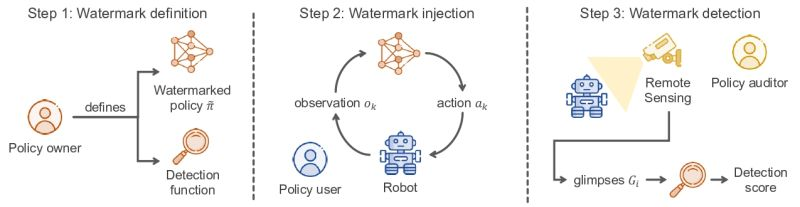
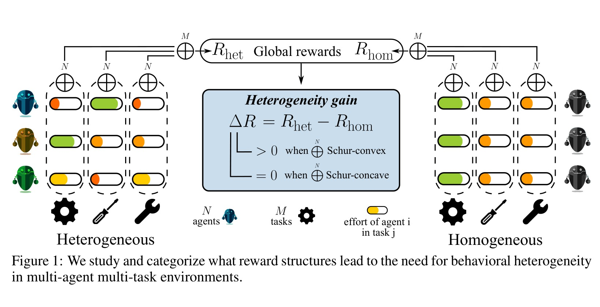
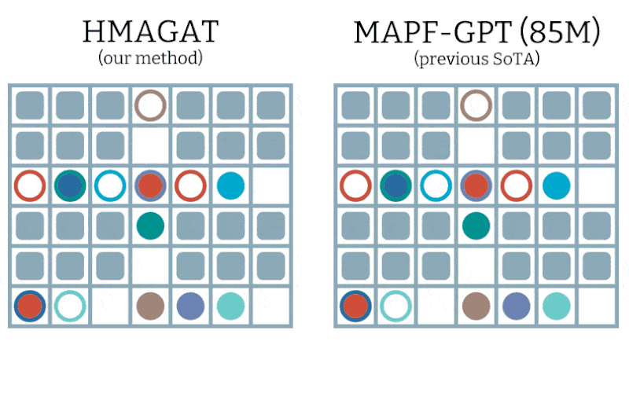
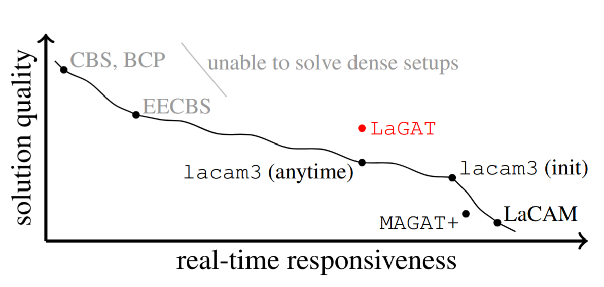
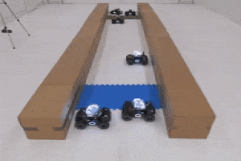

Postdoctoral Researcher, University of Cambridge
I'm a postdoc at the University of Cambridge, working with the Prorok Lab and affiliated with Trinity College.
I work on trust, safety, and coordination for AI deployed in the physical world. This includes remotely verifying which policy a robot is running, and designing scalable multi-agent algorithms with formal guarantees. My PhD explored multi-agent systems on graphs.
More publications on Google Scholar.
I have three papers accepted at ICLR 2026! I'll be presenting work on robot policy watermarking, when diversity helps in cooperative multi-agent learning, and higher-order interactions in multi-agent pathfinding.

Remotely Detectable Robot Policy Watermarking
How do you verify what policy a robot is deploying without access to its internals? We formalize this remote-observation setting through noisy, asynchronous video glimpses and introduce CoNoCo, which embeds a spectral watermark into a robot's motions via colored noise while preserving the marginal action distribution. The result is remote policy auditing from ordinary footage, with applications to safety, accountability, and IP protection.

When Is Diversity Rewarded in Cooperative Multi-Agent Learning?
We know how to train heterogeneous agents, but when does heterogeneity actually improve performance? In cooperative MARL, we show that the answer is tightly related to the curvature of the reward function, and introduce HetGPS, an algorithm that automatically discovers environments where diversity pays off.

Pairwise is Not Enough: Hypergraph Neural Networks for Multi-Agent Pathfinding
Standard GNNs model pairwise interactions, but multi-agent pathfinding is fundamentally a group coordination problem. HMAGAT uses directed hypergraph attention to capture higher-order interactions, establishing a new state of the art among learning-based MAPF solvers and outperforming a much larger baseline in dense environments.
Graph Attention-Guided Search for Dense Multi-Agent Pathfinding

Finding near-optimal solutions for dense multi-agent pathfinding (MAPF) problems in real-time remains challenging even for state-of-the-art planners. To this end, we develop a hybrid framework that integrates a learned heuristic derived from MAGAT, a neural MAPF policy with a graph attention scheme, into a leading search-based algorithm, LaCAM. Our work establishes, perhaps for the first time, that learnt heuristics can outperform SoTA search-based planners in dense MAPF problems.
ReCoDe: RL-based Dynamic Constraint Design for Multi-Agent Coordination

Time, Travel, and Energy in the Uniform Dispersion Problem
This work explores the fundamental efficiency limits of robot swarms. We prove when it's possible (or impossible!) to simultaneously optimize for time, distance, and energy during dispersion, and introduce FCDFS, an ant-robotics algorithm that achieves these bounds using only 5 bits of memory and zero communication.